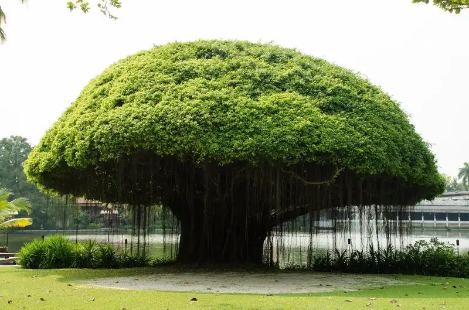
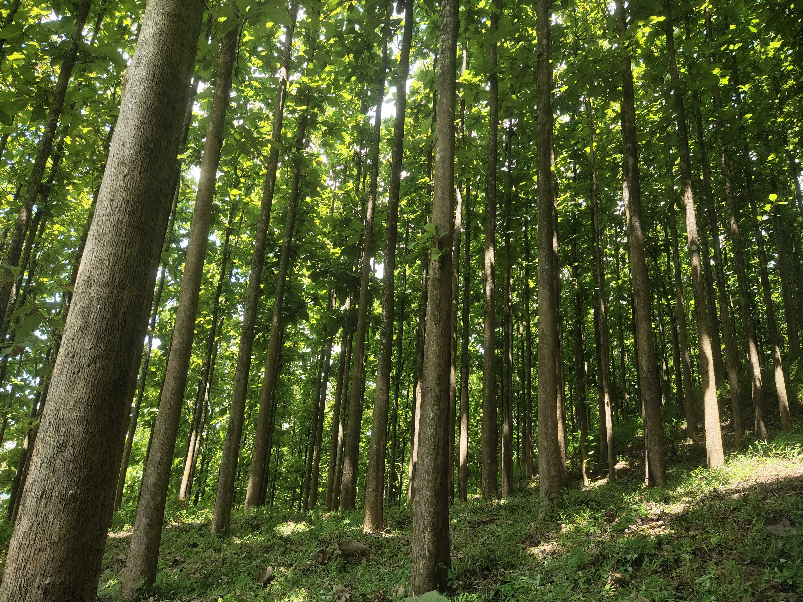
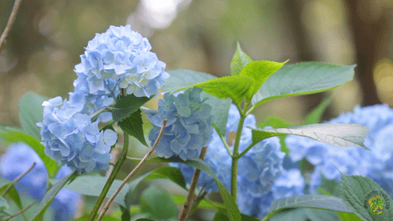
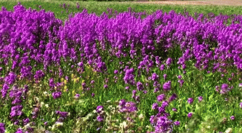
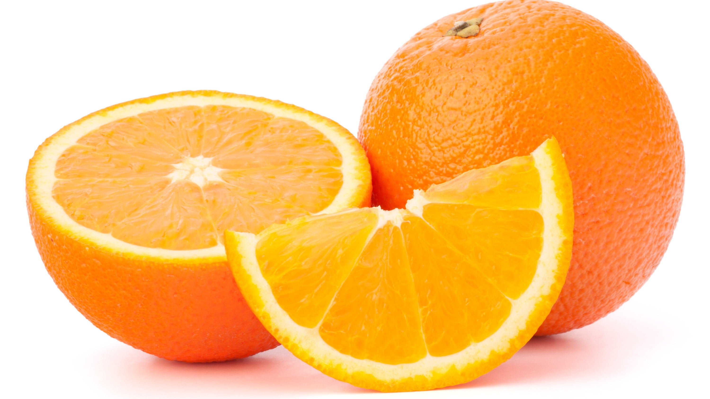
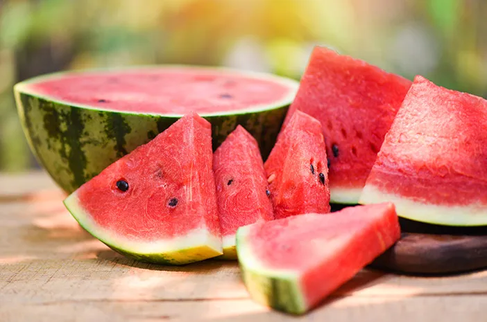
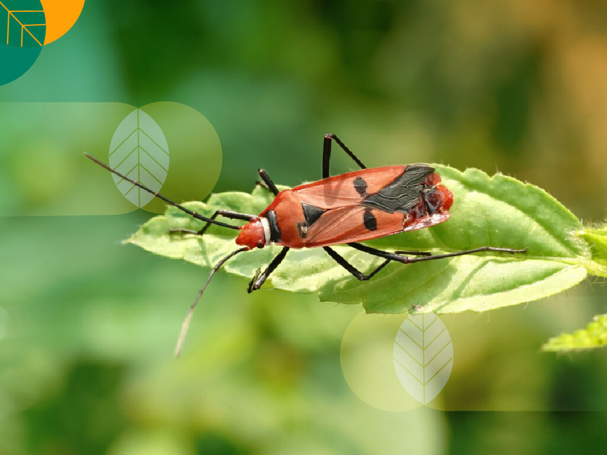
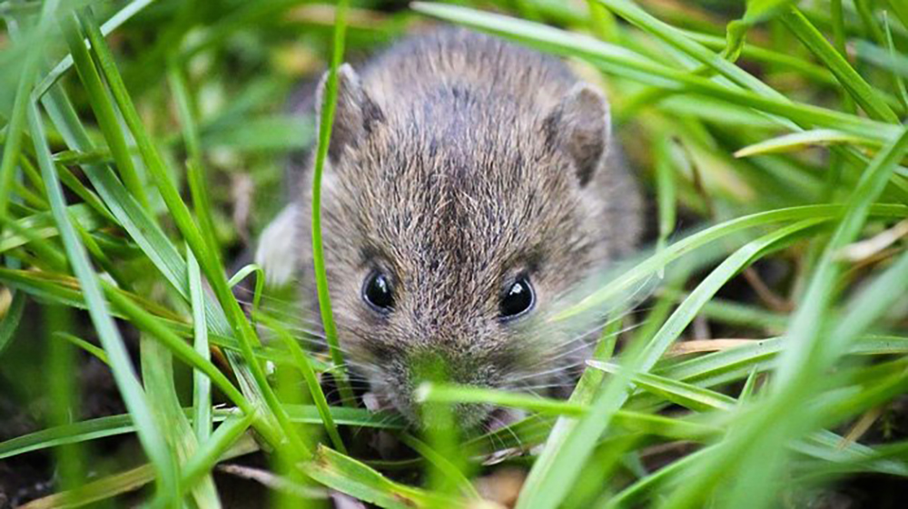

Welcome!
Web ini dibuat untuk memenuhi tugas besar pemograman web.
Silahkan untuk melihat-lihat dengan mengklik tombol pada bar menu!
terimakasih sudah berkunjung...
About Me
 |
| Name :Virgi Andrea Agusta |
| Class:IF-7 |
| NIM :10123289 |
| "There is nothing to lose when you have nothing at all" |
Pohon
pohon adalah tumbuhan menahun dengan batang yang tumbuh memanjang, mendukung cabang dan daun pada sebagian besar spesies. Dalam beberapa penggunaan, definisi pohon mungkin lebih sempit, biasanya hanya mengacu pada tanaman berkayu dengan pertumbuhan sekunder, tanaman yang dapat digunakan sebagai kayu, atau tanaman yang tumbuh hingga ketinggian tertentu. Dalam definisi yang lebih luas, palem, pakis, pisang, dan bambu juga termasuk jenis pohon. Pohon bukanlah kelompok taksonomi tetapi mencakup berbagai spesies tumbuhan yang mengembangkan batang dan cabang sebagai cara untuk menjulang di atas tumbuhan lain demi bersaing mendapatkan sinar matahari. Pohon cenderung berumur panjang, beberapa pohon bisa hidup hingga beberapa ribu tahun. Pohon telah tumbuh di Bumi setidaknya selama 370 juta tahun. Diperkirakan terdapat sekitar tiga triliun pohon dewasa di dunia.
Berikut ini contoh dari pohon:
Pohon Beringin
Pohon Jati
Bunga
Bunga adalah daun dan batang di sekitarnya yang termodifikasi. Modifikasi ini disebabkan oleh dihasilkannya sejumlah enzim yang dirangsang oleh sejumlah fitohormon tertentu. Pembentukan bunga dengan ketat dikendalikan secara genetik dan pada banyak jenis diinduksi oleh perubahan lingkungan tertentu, seperti suhu rendah, lama pencahayaan, dan ketersediaan air (lihat bagian Bunga:Pembentukan bunga).
Bunga hampir selalu berbentuk simetris, yang sering dapat digunakan sebagai penciri suatu takson. Ada dua bentuk bunga berdasar simetri bentuknya: aktinomorf ("berbentuk bintang", simetri radial) dan zigomorf (simetri cermin). Bentuk aktinomorf lebih banyak dijumpai.
Berikut ini contoh dari Bunga:
Hydrangea
Lavender
Buah
Buah adalah hasil reproduksi antara putik dan serbuk sari pada tumbuhan.Buah termasuk organ pada tumbuhan berbunga yang merupakan perkembangan lanjutan dari bakal buah (ovarium). Buah biasanya membungkus dan melindungi biji. Aneka rupa dan bentuk buah tidak terlepas kaitannya dengan fungsi utama buah, yakni sebagai pemencar biji tumbuhan.
Berikut ini contoh dari buah:
Jeruk
Semangka
Hama
hama adalah organisme pengganggu tanaman yang menimbulkan kerusakan secara fisik, dan ke dalamnya praktis adalah semua hewan yang menyebabkan kerugian dalam pertanian.
Suatu hewan juga dapat disebut hama jika menyebabkan kerusakan pada ekosistem alami atau menjadi agen penyebaran penyakit dalam habitat manusia. Contohnya adalah organisme yang menjadi vektor penyakit bagi manusia, seperti tikus dan lalat yang membawa berbagai wabah, atau nyamuk yang menjadi vektor malaria.
Berikut ini beberapa hama yang merusak tanaman:
Serangga
Hewan
Fun Fact
1. Beberapa tanaman merupakan karnivora atau pemakan daging, seperti pamakan serangga dan laba-laba
2. Resin/ damar pohon yang dibekukan dikenal sebagai batu ambar yang mengandung tanaman atau binatang-binatang kecil yang terperangkap di dalamnya
3. Bambu adalah tanaman yang tumbuh paling cepat, bambu bisa tumbuh hampir satu meter hanya dalam sehari.
4. Sekitar 2000 jenis tanaman berbeda digunakan oleh manusia untuk membuat makanan.